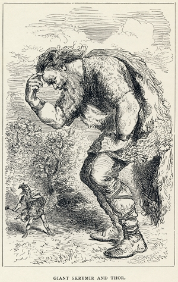

The mythology of ancient Scandinavia divided the universe into nine worlds each populated by a particular tribe of beings. The myths and stories that have survived to the present day primarily concern the doings of four of these tribes: the Æsir gods, the Vanir gods, the Jotuns, and humans. While each tribe tended to hang out in their home world, individuals did travel between the worlds fairly often and much of the action of the myths take place on our world (Midgard, or "middle-earth"). Below, I provide a few details about the nine worlds and the four main tribes that dwell there.
Vanaheim is home to the Vanir gods. The Vanir are a tribe of gods that hold sway over fertility and nature. The Aesir and Vanir had a war in their early days and two of the Aesir, Frey and his sister Freyja ended up staying among the Aesir as hostages (part of the peace process). Frey is a fertility god of the virility, sunshine, good weather, and sacral kingship. Freya is also responsible for fertility, more specifically she is the goddess of love, feminine fertility, sex, and magic.
One theory holds that the Vanir were the gods of an earlier group of inhabitants of Northern Europe which the Germanic/Norse tribes displaced or assimilated when they moved in during the migration period. The Vanir, then, be considered syncretized forms of the earlier gods much the same way as some Native American gods were transformed into Christian saints.
In Jotunheim.jpg dwell the race of frost, storm, and ice giants called the Jotuns. Jotuns are the primary adversary of the Aesir. As they did with the Vanir, the Aesir had a war with the Jotuns and it seems that Thor, one of the most important Norse gods, has as his primary responsibility killing jotuns. Jotuns are, generally, crude, vicious, primitive, barbarians. However, they are occasionally beautiful (in the case of the women) and wise (in the case of the men). In addition, some are sorcerers powerful enough to confound the gods (at least when it makes a good plot device). For example, although Loki is definitely a member of the Aesir, he is, in fact, a jotun. Many of Loki's attributes and abilities (such as the ability to change his shape at will, propensity for lying and causing mayhem, and eagerness to hurt or humiliate the Aesir) are prototypically jotun.
As with the Vanir, some scholars believe that the jotun were, originally, another group of gods supplanted by the Aesir at some point.